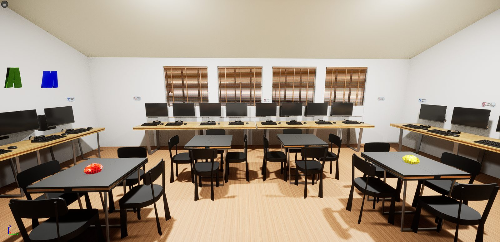
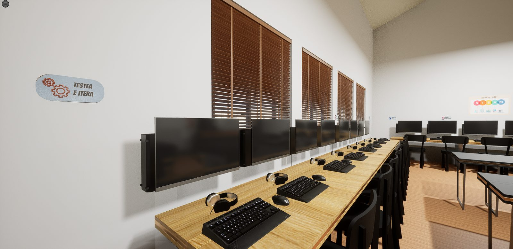
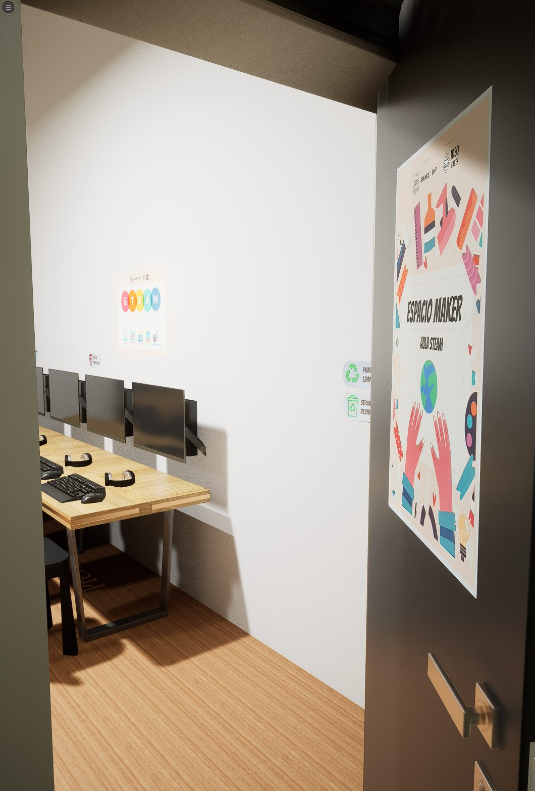
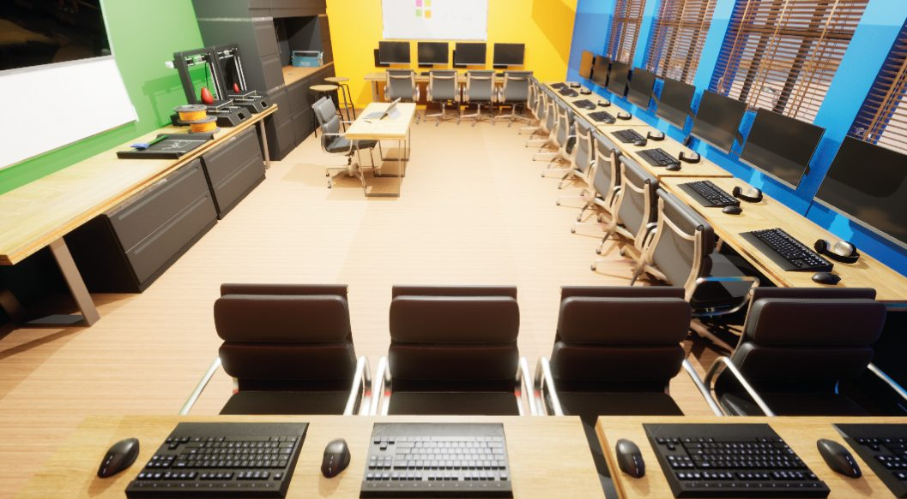
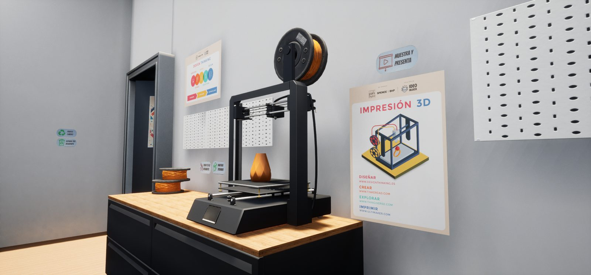
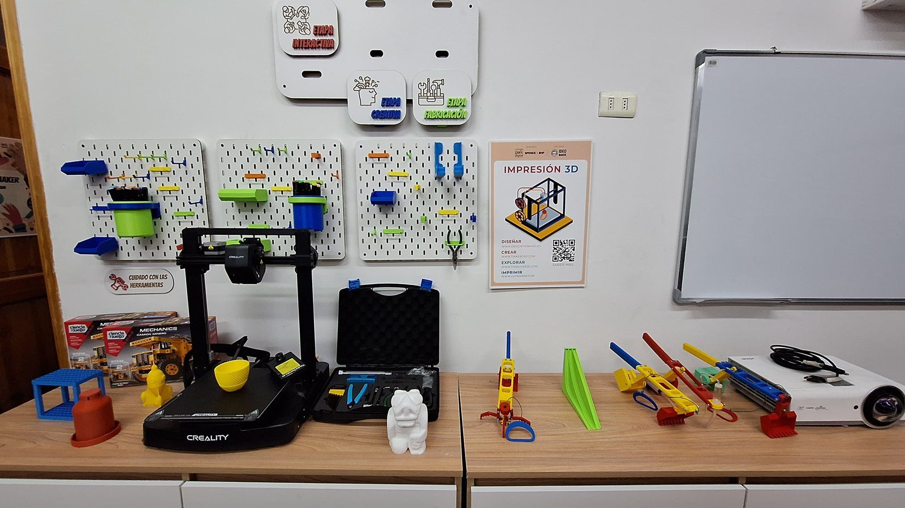

Sala Maker STEAM
Sala maker para dos liceos de la región de Antofagasta, modelada y recorrida en 3D antes de construirse, para discutir el espacio con la institución cuando cambiarlo todavía era gratis.

Sala Maker STEAM desarrollada en conjunto entre el equipo de Ideo Maker y la Fundación País Digital, para dos liceos de la región de Antofagasta: uno en Baquedano y otro en Sierra Gorda. El proyecto tuvo dos etapas: primero el espacio modelado y recorrido en 3D, y después la sala construida, con los docentes capacitados para usarla.
Mi rol
- Todo el proceso de implementación y capacitación en los dos liceos
- Modelos 3D del espacio en Unreal Engine
- Definición del Espacio Maker Aula STEAM, junto al equipo
Modelar la sala antes de construirla no es un ejercicio de presentación. Permite discutir circulaciones, ubicación de maquinaria y zonas de trabajo con la institución en el momento en que mover una mesa cuesta un clic y no una obra. Cuando el colegio ve el espacio recorrido en primera persona, las observaciones que aparecen son otras.
{kind=link}

{kind=link}

{kind=link}

{kind=link}

{kind=link}

{kind=link}
